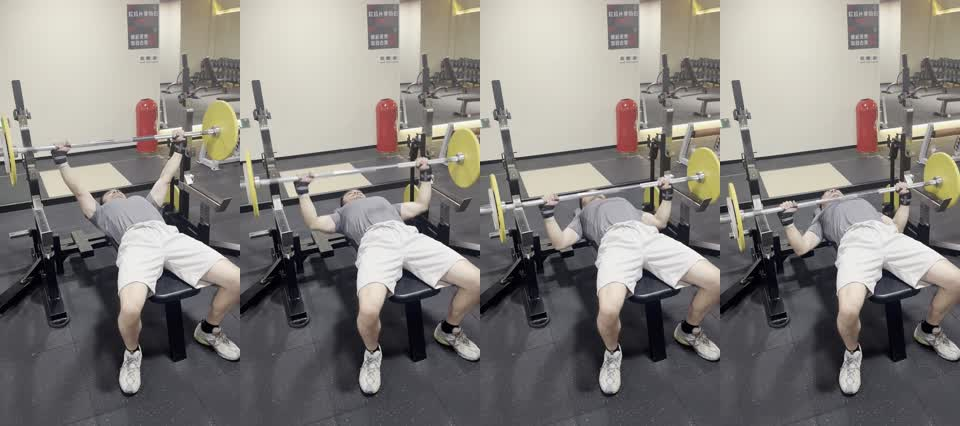

卧推关键画面

报告应先说当前画面真正能看见的内容：杠铃是否大体稳定、手腕是否在杠铃下方、肘部外展是否明显、脚和下肢是否稳定。
再说明当前画面的限制：触胸点和肩胛位置不能从这个角度下强结论。这样报告会更像教练复盘，而不是为了显得确定而过度判断。
下次口令：手腕压在杠铃正下方，脚踩稳；要复核肩胛和触胸点时，加一组侧面或侧后方机位。
这段视频适合作为卧推单动作评估样例。脚端斜前方机位能看清杠铃大致路径、手腕是否在杠铃下方、肘部是否明显外展、脚和下肢 setup 是否稳定。
报告不能把这个角度看不到的内容说满。肩胛后缩、触胸点、下放深度和卧推反弓需要侧面或侧后方补充机位。
| 安全项 | 优先级 | 本次判断 | 处理建议 |
|---|---|---|---|
| 杠铃控制与手腕承重 | 🟡 | 报告应检查手腕是否大体在杠铃下方，以及杠铃路径是否稳定。 | 提示会员保持手腕垂直承重，不用手腕后折硬撑杠铃。 |
| 肩部与保护设置 | 🟡 | 当前机位不适合高置信度判断肩胛后缩，也不一定能确认保护设置。 | 较重卧推应展示保护者或安全杠，并补侧面机位。 |
| 下肢 setup | 🟢 | 脚端斜前方机位适合观察脚是否稳定。 | 脚踩稳，推起时下肢不要乱动。 |
| 动作 | 代表画面 | 报告应覆盖 | 不应过度判断 |
|---|---|---|---|
| 杠铃卧推 | preview_contact_sheet.jpg | 杠铃路径、手腕承重、肘部外展、脚和节奏 | 肩胛后缩、触胸点、精确下放深度 |

报告应先说当前画面真正能看见的内容：杠铃是否大体稳定、手腕是否在杠铃下方、肘部外展是否明显、脚和下肢是否稳定。
再说明当前画面的限制：触胸点和肩胛位置不能从这个角度下强结论。这样报告会更像教练复盘，而不是为了显得确定而过度判断。
This sample should produce a single-exercise bench press assessment. The report should cover bar path, wrist stacking, elbow flare, foot stability, safety setup visibility, and filming-angle limitations.
The report should not overclaim scapular retraction, touch point, arch quality, or exact bar depth from this front-oblique angle. A side or rear-side view should be recommended for stricter bench review.